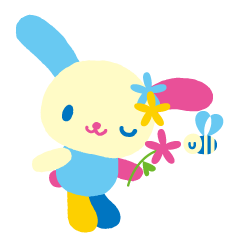
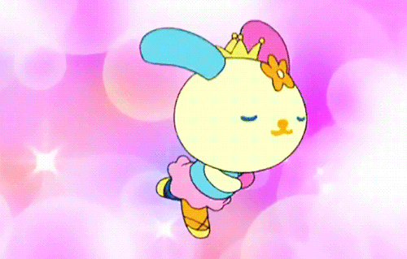

Meet Amadea Chan, a vibrant creative soul whose heart beats for radio production and the whimsical world of Sanrio. A devoted fan of Usahana, the charming Sanrio character, Amadea brings a touch of playfulness to everything she does. Her passion for radio is evident in her dynamic approach to storytelling and sound, where she crafts engaging narratives that resonate with listeners. Living by the motto, "I live, so I love," Amadea cherishes her friendships deeply, valuing the connections that enrich her life.
Beyond her creative pursuits, Amadea is an avid dog lover, with her beloved poodle, Keroppi, by her side. She appreciates the unique charm of every dog breed, reflecting her warm and inclusive nature. With a penchant for the color pink, she infuses her personality and work with a delightful sense of joy and creativity. Amadea is not just a creator; she is a beacon of enthusiasm, ready to share her love for all things artistic and canine with the world.

